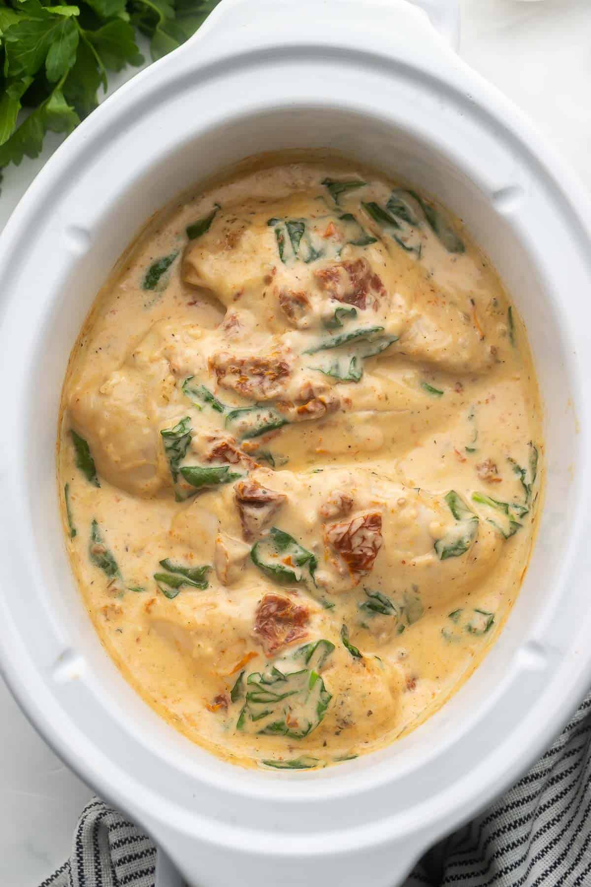

Home
Crockpot Tuscan Chicken

Description
This Crockpot Tuscan Chicken features juicy chicken breasts slow cooked in a rich and flavorful
cream sauce. This recipe takes just 10 minutes to prep and makes the perfect dinner served
over your favorite pasta!
Prep Time
10 minutes
Cook Time
3 hours
Servings
4
Ingredients
- 2lbs boneless, skinless chicken breasts (about 4)
- 1/2 teaspoon salt
- 1/2 teaspoon italian seasoning
- 1/4 teaspoon paprika
- 1/8 teaspoon pepper
Tuscan Cream Sauce
- 1 cup heavy whipping cream
- 1 tablespoon cornstarch
- 3 cloves garlic (finely minced)
- 1/4 teaspoon salt
- 1/8 teaspoon pepper
- 1/3 cup sun-dried tomatoes (oil packed, drained and chopped)
- 1/4 cup grated Parmesan cheese
- 1 cupchopped fresh spinach
Instructions
- Place the chicken in a 3- to 4-quart slow cooker.
- In a small bowl, combine the salt, Italian seasoning, paprika, and pepper.
Sprinkle the mixture evenly over the chicken.
Tuscan Cream Sauce
- In a medium bowl, whisk together the cream, cornstarch, garlic, salt, and pepper.
- Stir in the tomatoes and Parmesan and pour over the chicken in the slow cooker.
- Cover the slow cooker and cook on low for 3 hours, or until a meat thermometer
inserted into the chicken reaches 165°F. If the sauce separates as it cooks, simply
stir it until smooth. Stir in the spinach.
- Taste and adjust seasonings as desired. Remove from the slow cooker and serve.
Nutrition
Serving: 260grams, Calories: 393cal, Carbohydrates: 9g, Protein: 29g, Fat: 27g,
Saturated Fat: 15g, Polyunsaturated Fat: 1g, Monounsaturated Fat: 8g, Trans Fat:
1g, Cholesterol: 159mg, Sodium: 712mg, Potassium: 823mg, Fiber: 1g, Sugar: 4g,
Vitamin A: 1461IU, Vitamin C: 7mg, Calcium: 137mg, Iron: 2mg